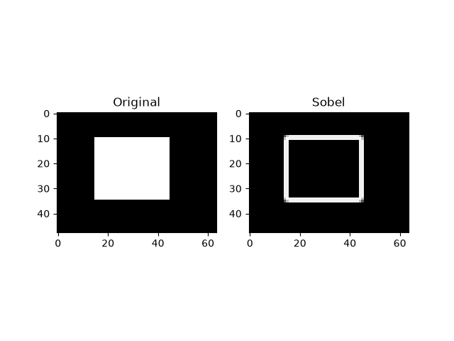
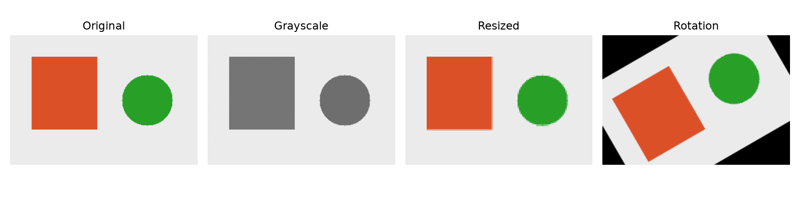
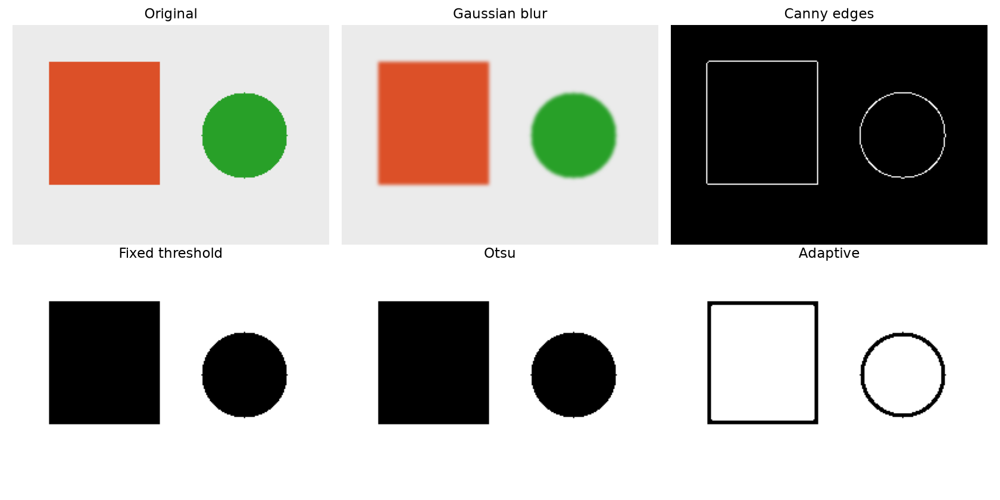
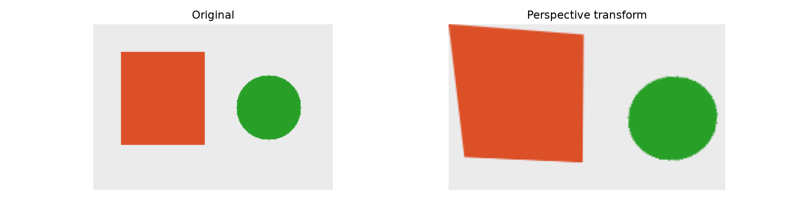
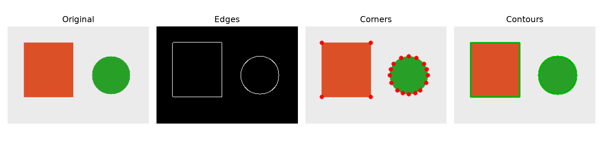

인공지능 파이썬 실무
인공지능 파이썬 실무픽셀 실험실
숫자가 바뀌면 그림이 어떻게 달라질까요? 아래는 JavaScript로 계산하는 8×8 밝기 모형입니다. 실제 Python 코드는 실습실에서 실행하세요.
RGB는 세 개의 숫자
OpenCV의 기본 읽기는 BGR 순서입니다. 표시 도구가 RGB를 기대하면 채널 순서를 변환하세요.
대단원 Ⅳ. 파이썬과 컴퓨터 비전 교과서 132–195쪽
중단원 01. 컴퓨터 비전 개요 · 134–146쪽
소단원 01. 컴퓨터 비전이란? · 135–136쪽
중단원 01. 컴퓨터 비전 개요 · 134–146쪽
소단원 02. 컴퓨터 비전의 활용 분야 · 137–139쪽
이 웹 주제의 연계 범위: 134–139쪽
웹 학습 주제 01
컴퓨터 비전과 영상 처리
사진을 다듬는 것과 사진의 의미를 판단하는 것을 구별하세요.
컴퓨터 비전과 영상 처리 · 한눈에 보기
- 1영상 입력
- 2화질·크기 처리
- 3특징·객체 분석
- 4결과 표시·사람의 확인
| 작업 | 출력 | 구분 |
|---|---|---|
| 블러 | 새 이미지 | 영상 처리 |
| 객체 검출 | 위치와 클래스 | 컴퓨터 비전 |
| 사람의 검토 | 맥락에 따른 판단 | 시스템 활용 |
개념 더 읽기
영상 처리는 밝기·잡음·크기처럼 이미지 표현을 바꾸는 작업입니다. 컴퓨터 비전은 영상에서 물체·위치·행동 등 의미 있는 정보를 추론합니다. 전처리는 비전 시스템의 일부로 쓰일 수 있습니다.
스마트폰, 교통, 제조, 보안, 의료 보조 등에서 활용하지만 조명·가림·각도·데이터 분포 변화로 오류가 생길 수 있습니다. 인간은 맥락을 활용하고 컴퓨터는 수치 연산으로 반복 분석합니다. 촬영 자료의 이용 범위와 오판 영향을 생각하며 실습은 제공 도형과 사용 허락을 받은 자료로 진행하세요.
직접 해 보세요
- 학교에서 사용할 비전 기술의 이점과 오판 시 문제를 함께 설명하세요.
대단원 Ⅳ. 파이썬과 컴퓨터 비전 교과서 132–195쪽
중단원 01. 컴퓨터 비전 개요 · 134–146쪽
소단원 03. 컴퓨터 비전의 기본 개념 · 140–144쪽
이 웹 주제의 연계 범위: 140–141쪽
웹 학습 주제 02
픽셀·해상도·RGB·그레이스케일
숫자 행렬이 그림이 되는 과정을 살펴보세요.
픽셀·해상도·RGB·그레이스케일 · 한눈에 보기
- 1숫자 하나한 채널 값
- 2RGB 3개컬러 픽셀
- 3행과 열이미지
- 4연속된 이미지영상
| 표현 | 예 | 의미 |
|---|---|---|
| shape | (2,3,3) | 높이2·너비3·채널3 |
| 픽셀 수 | 2×3=6 | 위치의 개수 |
| 원소 수 size | 2×3×3=18 | 채널 값의 개수 |
| OpenCV 기본 순서 | B,G,R | RGB 표시 전 변환 |
개념 더 읽기
이미지는 픽셀의 격자입니다. 너비×높이가 해상도이고, 8비트 채널 하나는 보통 0~255 값을 사용합니다. RGB는 빨강·초록·파랑 채널이고 그레이스케일은 밝기 한 채널입니다.
NumPy 이미지의 shape는 보통 (높이, 너비, 채널)입니다. 배열의 size는 채널을 포함한 원소 수이므로 컬러 이미지의 픽셀 수와 다릅니다. 예를 들어 (2,3,3)은 픽셀 6개, 채널 값 18개입니다.
직접 해 보세요
- 픽셀 실험실에서 기준이 128일 때 값 128이 어느 색이 되는지 확인하세요.
이 설명에 이어서 실습하기
예제를 선택하면 바로 아래에서 코드를 수정하고 실행할 수 있습니다. 작성한 코드는 예제별로 저장됩니다.
CODE WORKSPACE
코드를 바꾸는 실습실
실행 엔진은 처음 실행할 때 내려받습니다. 패키지 크기에 따라 최초 준비에 최대 3분이 걸릴 수 있으며 네트워크가 필요합니다. 실행은 최대 30초이며 중지 후 다시 실행할 수 있습니다.
실행할 예제를 선택하세요.
대단원 Ⅳ. 파이썬과 컴퓨터 비전 교과서 132–195쪽
중단원 01. 컴퓨터 비전 개요 · 134–146쪽
소단원 03. 컴퓨터 비전의 기본 개념 · 140–144쪽
이 웹 주제의 연계 범위: 142–146쪽
웹 학습 주제 03
알고리즘·처리 과정·평가 기준
정확도뿐 아니라 처리 시간도 비교하세요.
알고리즘·처리 과정·평가 기준 · 한눈에 보기
- 1입력
- 2전처리
- 3특징과 위치
- 4의미 해석
- 5출력·평가
| 기준 | 질문 |
|---|---|
| 정확성 | 무엇을 놓치거나 잘못 찾나? |
| 처리 시간 | 한 장에 몇 ms인가? |
| 실시간성 | 입력부터 출력까지 얼마나 늦나? |
| 안정성 | 조명·가림·각도 변화에도 유지되나? |
개념 더 읽기
패턴 매칭은 정해진 모양과의 유사성, 특징점 검출은 모서리 같은 위치 단서, 머신러닝은 학습한 특징 관계, 딥러닝은 다층 신경망의 표현을 활용합니다. 목적과 입력 조건에 따라 도구를 고릅니다.
입력 → 전처리 → 특징 추출·검출 → 해석 → 출력으로 구성할 수 있습니다. 같은 대상도 조명과 각도가 바뀌면 결과가 달라집니다. 정확도·속도·실시간 지연·조건 변화에 대한 안정성을 함께 비교하세요.
직접 해 보세요
- 번호판 검출과 문자 인식을 서로 다른 단계로 그려 보세요.
대단원 Ⅳ. 파이썬과 컴퓨터 비전 교과서 132–195쪽
중단원 02. 컴퓨터 비전 라이브러리 활용 · 147–193쪽
소단원 01. 컴퓨터 비전 라이브러리 소개 · 148–154쪽
이 웹 주제의 연계 범위: 147–154쪽
웹 학습 주제 04
OpenCV·Pillow·Matplotlib·scikit-image
입출력·편집·표시·분석 도구를 구별해 보세요.
OpenCV·Pillow·Matplotlib·scikit-image · 한눈에 보기

원본과 Sobel 에지 비교 · 제공 Python 예제의 실제 실행 결과 · 클릭하여 확대- 1입력 읽기
- 2배열/이미지 객체
- 3처리 도구 적용
- 4표시·저장
| 도구 | 설치 이름 | 핵심 호출 |
|---|---|---|
| OpenCV | opencv-python | cv2.imread / cv2.imwrite |
| Pillow | pillow | Image.open / resize / save |
| Matplotlib | matplotlib | imshow / subplots |
| scikit-image | scikit-image | filters.sobel |
개념 더 읽기
OpenCV는 영상 입출력과 처리·검출, Pillow는 이미지 편집·형식 변환, Matplotlib은 결과 비교와 그래프, scikit-image는 필터와 과학적 이미지 분석을 제공합니다.
OpenCV의 기본 컬러 읽기는 BGR이며 Pillow는 보통 RGB를 사용합니다. Pillow size의 (너비, 높이)와 NumPy shape의 (높이, 너비)를 구별하세요. 화면 표시 방식도 라이브러리별로 다릅니다.
직접 해 보세요
- 같은 240×160 이미지에서 Pillow.size와 OpenCV.shape가 어떻게 다른지 적으세요.
이 설명에 이어서 실습하기
예제를 선택하면 바로 아래에서 코드를 수정하고 실행할 수 있습니다. 작성한 코드는 예제별로 저장됩니다.
대단원 Ⅳ. 파이썬과 컴퓨터 비전 교과서 132–195쪽
중단원 02. 컴퓨터 비전 라이브러리 활용 · 147–193쪽
소단원 02. 이미지 데이터 다루기 · 155–162쪽
이 웹 주제의 연계 범위: 155–162쪽
웹 학습 주제 05
이미지 읽기·표시·변환·저장
파일을 못 읽었을 때 무엇부터 확인할까요?
이미지 읽기·표시·변환·저장 · 한눈에 보기

원본·회색조·축소·회전 결과 · 제공 Python 예제의 실제 실행 결과 · 클릭하여 확대- 1imread → None 확인
- 2색상·크기·회전
- 3imshow + waitKey
- 4imwrite 성공 확인
- 5창 정리
| 변환 | 입력 | 주의 |
|---|---|---|
| resize | (너비,높이) | shape 순서와 반대 |
| cvtColor | 변환 코드 | BGR↔RGB / GRAY |
| warpAffine | 행렬·출력 크기 | 잘림과 빈 영역 |
| imwrite | 경로·이미지 | 폴더 먼저 생성 |
개념 더 읽기
imread가 실패하면 None을 반환하므로 shape를 읽기 전에 확인합니다. cvtColor는 색 공간을, resize는 크기를 바꿉니다. getRotationMatrix2D와 warpAffine은 지정한 중심과 각도로 회전시킵니다.
OpenCV 창은 imshow로 표시하고 waitKey로 키 입력과 창 처리를 기다린 뒤 destroyAllWindows로 정리합니다. 저장 폴더를 먼저 만들고 imwrite의 성공 여부도 확인하세요. 고정 크기로 바꾸면 비율이 달라질 수 있고 회전 출력 영역 밖은 잘릴 수 있습니다.
직접 해 보세요
- 축소 후 픽셀 수와 원소 수를 계산하고 shape로 검증하세요.
이 설명에 이어서 실습하기
예제를 선택하면 바로 아래에서 코드를 수정하고 실행할 수 있습니다. 작성한 코드는 예제별로 저장됩니다.
대단원 Ⅳ. 파이썬과 컴퓨터 비전 교과서 132–195쪽
중단원 02. 컴퓨터 비전 라이브러리 활용 · 147–193쪽
소단원 03. 이미지 전처리와 변환 · 163–172쪽
이 웹 주제의 연계 범위: 163–168쪽
웹 학습 주제 06
블러·에지·이진화
밝기를 부드럽게 할까요, 경계를 찾을까요?
블러·에지·이진화 · 한눈에 보기

블러·에지·세 이진화의 실제 결과 · 제공 Python 예제의 실제 실행 결과 · 클릭하여 확대- 1원본
- 2블러로 잡음 완화
- 3그레이스케일
- 4에지 또는 이진화
- 5조건별 결과 비교
| 기법 | 목적 | 바꿀 값 |
|---|---|---|
| 블러 | 잡음 완화 | 커널 크기 |
| Canny | 경계 찾기 | 하한·상한 |
| 고정/Otsu | 전역 이진화 | 고정/자동 임계값 |
| 적응형 | 영역별 이진화 | 홀수 blockSize·C |
개념 더 읽기
평균 블러는 주변 평균, 가우시안 블러는 가중 평균, 중앙값 블러는 주변 중앙값으로 잡음을 줄입니다. 커널이 커지면 세부 정보가 더 사라질 수 있습니다. Canny는 밝기 변화의 경계를 찾으며 두 임계값이 연결되는 에지의 선택에 영향을 줍니다.
고정 이진화는 한 기준, Otsu는 밝기 분포를 이용해 자동 선택한 기준, 적응형은 주변 영역별 기준을 사용합니다. THRESH_BINARY에서는 값이 기준보다 클 때 255이고 같거나 작으면 0입니다. 조명이 고르지 않으면 방법별 차이가 커집니다.
직접 해 보세요
- 커널 3과 15, 고정 임계값 80과 180의 결과를 비교하세요.
이 설명에 이어서 실습하기
예제를 선택하면 바로 아래에서 코드를 수정하고 실행할 수 있습니다. 작성한 코드는 예제별로 저장됩니다.
대단원 Ⅳ. 파이썬과 컴퓨터 비전 교과서 132–195쪽
중단원 02. 컴퓨터 비전 라이브러리 활용 · 147–193쪽
소단원 03. 이미지 전처리와 변환 · 163–172쪽
이 웹 주제의 연계 범위: 168–172쪽
웹 학습 주제 07
원근 변환과 마우스 이벤트
원본 네 점과 목적지 네 점의 순서를 맞춰 보세요.
원근 변환과 마우스 이벤트 · 한눈에 보기

원본과 원근 변환 결과 · 제공 Python 예제의 실제 실행 결과 · 클릭하여 확대- 1왼쪽 위
- 2오른쪽 위
- 3오른쪽 아래
- 4왼쪽 아래
- 5대응 행렬 → 새 이미지
| 단계 | OpenCV | 주의 |
|---|---|---|
| 클릭 연결 | setMouseCallback | 이벤트 종류 확인 |
| 행렬 | getPerspectiveTransform | float32·점 순서 |
| 변환 | warpPerspective | 출력 (너비,높이) |
개념 더 읽기
원근 변환은 기울어진 평면의 네 꼭짓점을 새 사각형의 네 꼭짓점에 대응시킵니다. getPerspectiveTransform으로 행렬을 구하고 warpPerspective로 새 이미지에 매핑합니다.
마우스 콜백은 클릭 좌표를 모으고, 네 점을 모으면 변환합니다. 두 목록의 순서를 일치시키고 교차되거나 한 직선 위에 놓인 점을 피하세요. ESC 취소와 읽기 실패도 처리합니다.
직접 해 보세요
- 원본과 목적지에서 두 점 순서만 뒤바꾸면 어떤 문제가 생길지 예상하세요.
이 설명에 이어서 실습하기
예제를 선택하면 바로 아래에서 코드를 수정하고 실행할 수 있습니다. 작성한 코드는 예제별로 저장됩니다.
대단원 Ⅳ. 파이썬과 컴퓨터 비전 교과서 132–195쪽
중단원 02. 컴퓨터 비전 라이브러리 활용 · 147–193쪽
소단원 04. 이미지에서 중요한 부분 찾기 · 173–176쪽
이 웹 주제의 연계 범위: 173–176쪽
웹 학습 주제 08
에지·코너·윤곽선으로 중요한 부분 찾기
선·점·닫힌 경계 중 무엇이 필요한가요?
에지·코너·윤곽선으로 중요한 부분 찾기 · 한눈에 보기

에지·코너·윤곽선의 차이 · 제공 Python 예제의 실제 실행 결과 · 클릭하여 확대- 1그레이스케일
- 2에지 / 코너 / 이진화
- 3윤곽·위치·면적
- 4그림에 표시
| 도구 | 결과 | 활용 |
|---|---|---|
| Canny | 경계 픽셀 | 형태 단서 |
| goodFeaturesToTrack | 코너 좌표 | 영상 간 대응 |
| findContours | 경계 점 목록 | 영역·면적·개수 |
개념 더 읽기
에지는 밝기가 급변하는 경계, 코너는 여러 방향으로 밝기가 바뀌는 위치, 윤곽선은 이진 영역의 경계를 잇는 점 집합입니다. 파노라마의 대응 위치, 도형 개수, 크기 측정 등 목적에 따라 선택합니다.
코너가 없으면 반환값이 None일 수 있습니다. 윤곽선은 이진화 결과와 잡음에 영향을 받으므로 면적 등으로 걸러야 합니다. 단순히 에지를 찾았다고 물체의 종류나 신원을 안 것은 아닙니다.
직접 해 보세요
- 네모와 원에서 코너 수가 왜 다른지 관찰하세요.
이 설명에 이어서 실습하기
예제를 선택하면 바로 아래에서 코드를 수정하고 실행할 수 있습니다. 작성한 코드는 예제별로 저장됩니다.
대단원 Ⅳ. 파이썬과 컴퓨터 비전 교과서 132–195쪽
중단원 02. 컴퓨터 비전 라이브러리 활용 · 147–193쪽
소단원 05. 컴퓨터 비전 프로젝트 실습 · 177–191쪽
이 웹 주제의 연계 범위: 177–184쪽
웹 학습 주제 09
얼굴·눈·웃음 검출과 웹캠
얼굴의 위치를 찾는 것과 누구인지 아는 것은 달라요.
얼굴·눈·웃음 검출과 웹캠 · 한눈에 보기
- 1분류기·카메라 확인
- 2프레임 읽기
- 3얼굴 → ROI 속 눈/웃음
- 4사각형 표시
- 5종료·자원 해제
| 문제 | 시도 | 기록 |
|---|---|---|
| 놓친 얼굴 | 크기 간격·조명 조절 | 누락 수 |
| 잘못 찾은 얼굴 | minNeighbors 조절 | 오탐 수 |
| 느린 처리 | 프레임 축소 | 처리 시간 |
| 눈 좌표 | ROI 원점 더하기 | 전체 화면 위치 |
개념 더 읽기
Haar Cascade는 밝기 패턴과 단계적 판별로 특정 대상의 후보 영역을 찾습니다. 얼굴을 찾은 뒤 그 영역(ROI) 안에서 눈·웃음 패턴을 탐색하면 계산 범위를 줄일 수 있습니다. 웃음 패턴 검출만으로 감정을 단정할 수 없습니다.
scaleFactor는 크기 탐색 간격, minNeighbors는 후보 유지 조건에 영향을 줍니다. 값에 따른 속도·누락·오탐을 실제로 비교하세요. VideoCapture → read → 처리·표시 → 종료 흐름에서 실패를 확인하고 finally로 release와 창 정리를 보장합니다.
직접 해 보세요
- 같은 사진에서 minNeighbors를 바꾸고 오탐·누락 표를 작성하세요.
이 설명에 이어서 실습하기
예제를 선택하면 바로 아래에서 코드를 수정하고 실행할 수 있습니다. 작성한 코드는 예제별로 저장됩니다.
대단원 Ⅳ. 파이썬과 컴퓨터 비전 교과서 132–195쪽
중단원 02. 컴퓨터 비전 라이브러리 활용 · 147–193쪽
소단원 05. 컴퓨터 비전 프로젝트 실습 · 177–191쪽
이 웹 주제의 연계 범위: 185–191쪽
웹 학습 주제 10
YOLOv8 객체 탐지와 개수 표시
박스·클래스·신뢰도를 읽고 프레임별 개수를 세어 보세요.
YOLOv8 객체 탐지와 개수 표시 · 한눈에 보기
- 1모델·입력 준비
- 2추론
- 3클래스·좌표·점수
- 4현재 프레임 개수
- 5표시·조건 비교
| Haar | YOLO | 선택 기준 |
|---|---|---|
| 특정 패턴 분류기 | 다중 클래스 모델 | 찾을 대상 |
| 명암 패턴 기반 | 학습 가중치 기반 | 입력 조건 |
| CPU에서 비교적 가벼운 구성 | 모델·해상도별 비용 차이 | 실측 속도와 오류 |
개념 더 읽기
YOLO 예제는 사전 학습된 yolov8n.pt로 이미지 속 여러 클래스의 위치와 점수를 반환합니다. 이 단원은 교과서의 YOLOv8 경로를 다루며 특정 버전을 최신이라고 단정하지 않습니다. conf 기준을 바꾸면 출력되는 후보 수가 달라집니다.
검출 결과의 boxes.cls는 클래스 번호, conf는 모델 점수, xyxy는 박스 좌표입니다. 프레임마다 Counter를 새로 만들어 현재 개수를 셉니다. 여러 프레임의 합계는 고유 객체 수가 아니며, 누적 통행량에는 추적과 중복 처리 설계가 더 필요합니다. 보안·교통·매장·농업·운전 보조 등 응용에서는 해당 대상의 학습 범위와 실패 조건도 확인해야 합니다.
직접 해 보세요
- conf를 바꿨을 때 물체를 놓치는 경우와 오탐이 어떻게 달라지는지 기록하세요.
이 설명에 이어서 실습하기
예제를 선택하면 바로 아래에서 코드를 수정하고 실행할 수 있습니다. 작성한 코드는 예제별로 저장됩니다.
대단원 Ⅳ. 파이썬과 컴퓨터 비전 교과서 132–195쪽
마무리·종합 평가 연계
이 웹 주제의 연계 범위: 192–195쪽 + 확장
웹 학습 주제 11
컴퓨터 비전 프로젝트와 단원 정리
입력·처리·출력을 나누어 완성하세요.
컴퓨터 비전 프로젝트와 단원 정리 · 한눈에 보기
- 1입력 자료·목표
- 2처리 함수 모듈
- 3오류·조건별 결과
- 4GUI 또는 카메라 연결
- 5비교표·저널
| 프로젝트 | 핵심 처리 | 확인 |
|---|---|---|
| 문서 스캔 | 원근·대비·이진화 | 글자와 경계 보존 |
| 도형 계수 | 이진화·윤곽 | 잡음 제외 |
| 객체 탐지 | Haar / YOLO | 오탐·누락·속도 |
개념 더 읽기
문서 스캔은 원근 보정 → 잡음 완화 → 대비 조정 → 이진화 흐름을 실험할 수 있습니다. 항상 한 순서가 모든 이미지에 최선인 것은 아니므로 같은 입력에서 결과를 비교하세요. 정적 이미지로 검증한 뒤 카메라 입력으로 확장합니다.
라이브러리 선택, 블러·이진화·에지의 목적, 얼굴 검출과 개인 식별의 차이, Haar 코드의 분류기·detectMultiScale·imshow를 점검하세요. 이미지와 오류 조건, 결과 비교표, 처리 시간과 한계를 함께 제출합니다.
직접 해 보세요
- 2단원 GUI의 버튼에서 이미지 처리 함수를 호출하는 앱을 설계하세요.
이 설명에 이어서 실습하기
예제를 선택하면 바로 아래에서 코드를 수정하고 실행할 수 있습니다. 작성한 코드는 예제별로 저장됩니다.
PRACTICE / RETRY / UNDERSTAND
연습 문제 39
실행 검사는 결과와 입력 조건을 확인합니다. 빈칸은 대표 답안과 비교하며, 다른 표현은 해설을 보고 판단하세요. GUI 코드는 PC 실행 점검까지 마치세요.
LEARNING JOURNAL
오늘 배운 것을 내 말로
코드·풀이·저널은 이 브라우저에 바로 저장됩니다. 학교 계정으로 로그인하면 다른 기기와 이어서 볼 수 있습니다. 공용 PC에서는 로그아웃할 때 이 브라우저 기록을 지울 수 있습니다. 서버로 제출되거나 공식 성적으로 처리되지 않습니다.